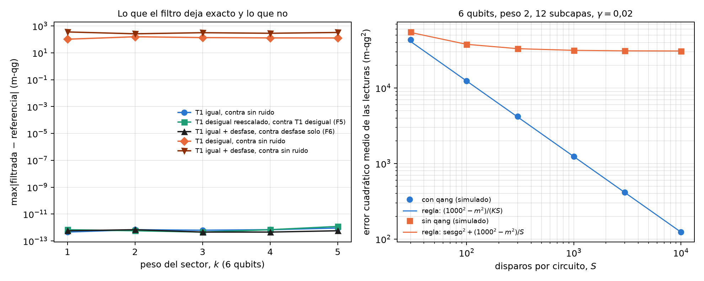
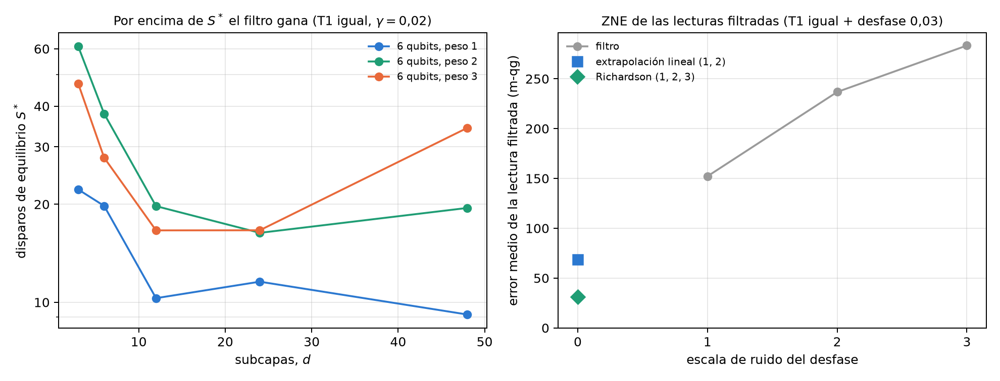

21 El filtro de simetría qg y la exactitud bajo relajación T1
El capítulo 20 usó el filtro qg como herramienta: descartar los disparos que salieron del sector de peso de Hamming devuelve la lectura sin ruido bajo T1. Este capítulo lo trata como objeto. Primero el teorema y por qué vale, en la escala del capítulo 1. Después lo que cuesta, con una regla cerrada que predice antes de correr cuándo conviene, y lo que no corrige: el T1 desigual entre qubits, el desfase y los errores de compuerta y de lectura. Para cada límite hay una propiedad exacta (F5 y F6 en las notas) que dice cómo seguir. Lo estructural se verifica con código sobre estados al azar; los resultados de clasificación son los de las notas, con predicciones registradas antes de correr.
21.1 Desde la base: el decaimiento empuja las lecturas al polo norte
El amortiguamiento de amplitud de un qubit tiene dos operadores de Kraus:
\[ K_0=\begin{pmatrix}1&0\\0&\sqrt{1-\gamma}\end{pmatrix},\qquad K_1=\sqrt\gamma\,|0\rangle\langle1|. \]
\(K_1\) es el salto: el qubit cae a \(|0\rangle\), y su lectura pasa a \(+1000\) m-qg, el polo norte. \(K_0\) es la evolución sin salto: no mueve \(|0\rangle\) y multiplica la amplitud de \(|1\rangle\) por \(\sqrt{1-\gamma}\). En un registro, el producto de los \(K_0\) multiplica cada estado de la base con \(k\) unos por \((1-\gamma)^{k/2}\), el mismo factor para todos los estados del sector de peso \(k\). Y cualquier salto baja el peso en uno.
De ahí el teorema (notas, §77 y §78 F4): con el mismo T1 en todos los qubits, quedarse con los disparos de peso \(k\) devuelve el estado sin ruido. El factor sin salto es un escalar sobre el sector, y al normalizar desaparece; todo lo que saltó está en otro sector. Vale entre capas de compuertas que conservan el peso, para cualquier intensidad y cualquier profundidad. La fracción de disparos que sobrevive es \(K=(1-\gamma)^{k\,d}\), con \(d\) el número de pasos de amortiguamiento.
| sector (6 qubits) | dimensión | \(\lvert\)filtrada − sin ruido\(\rvert\) máx. (m-qg) |
|---|---|---|
| peso 1 | 6 | \(4\cdot10^{-13}\) |
| peso 2 | 15 | \(7\cdot10^{-13}\) |
| peso 3 | 20 | \(6\cdot10^{-13}\) |
| peso 4 | 15 | \(7\cdot10^{-13}\) |
| peso 5 | 6 | \(9\cdot10^{-13}\) |
Para un estado de peso 2 con tres pasos de amortiguamiento, la fracción que queda en el sector es 0,606355, exactamente \(0{,}92^6\). El filtro es una posselección, y lo que devuelve es una probabilidad condicional: la ecuación del capítulo 1 aplicada dentro del sector.
21.2 Lo que cuesta: la regla del error cuadrático medio
El filtro elimina el sesgo y paga con disparos: con \(S\) disparos sólo quedan \(KS\). Las notas (§94) escribieron antes de correr una regla cerrada para el error cuadrático medio de las lecturas \(m\) de los qubits:
\[ \text{ECM}_{\text{qang}}\approx\frac{1000^2-m^2}{KS},\qquad \text{ECM}_{\text{crudo}}=\text{sesgo}^2+\frac{1000^2-m_{\text{crudo}}^2}{S}. \]
El primero es el ruido de disparo del capítulo 1 con \(KS\) disparos; el segundo suma el sesgo hacia el polo norte, que no baja con más disparos. El script del capítulo lo comprueba con 10 circuitos al azar de 6 qubits, peso 2, 12 subcapas y \(\gamma=0{,}02\) (\(K=0{,}616\)), 200 repeticiones por punto:
| disparos \(S\) | 30 | 100 | 300 | 1000 | 3000 | 10 000 |
|---|---|---|---|---|---|---|
| ECM con qang, simulado / regla | 1,05 | 1,01 | 1,02 | 1,00 | 1,01 | 1,00 |
| ECM sin qang / ECM con qang | 1,3 | 3,0 | 7,9 | 25 | 74 | 249 |
El error crudo se estanca en unos 31 000 m-qg² (un sesgo de unos 175 m-qg), mientras el filtrado sigue bajando como \(1/S\). Igualando las dos expresiones sale el número de disparos de equilibrio \(S^*\): por encima, gana el filtro. En los circuitos de este capítulo \(S^*\) va de 9 a 61 disparos (Figura 21.2, izquierda); en la grilla de las notas, de 3 a 110 (108 configuraciones hasta 8 qubits, peso 4 y profundidad 24, con hasta 1000 veces menos error con el filtro).
Con muy pocos disparos conservados (§96, 405 configuraciones con \(K\) hasta \(2{,}6\cdot10^{-7}\)) la regla generalizada, que incluye el sesgo que queda en la lectura filtrada, elige al ganador en 342 de 342 casos con \(KS\ge5\), también con T1 desigual y desfase. Cuando sobrevive menos de un disparo, el filtro devuelve 0 por falta de datos, y aun así le gana a la lectura cruda en 51 de 57 casos, porque la cruda colapsó hacia \(|0\dots0\rangle\), el polo norte, que es peor apuesta que el ecuador. No apareció un régimen en el que el costo en disparos decida contra el filtro.

21.3 Entrenar a través del filtro
Como la lectura filtrada bajo T1 igual es la sin ruido para cualquier parámetro, la pérdida y sus gradientes también lo son, y entrenar con ruido filtrado es entrenar sin ruido (§77; el capítulo 20 lo verificó en PennyLane a \(10^{-16}\)). Las notas lo repitieron entrenando desde disparos (§109), con 100 o 1000 disparos nuevos por evaluación y gradientes SPSA:
| entrenamiento | con qang | sin qang |
|---|---|---|
| probabilidades exactas sin ruido | 0,945 | – |
| disparos, \(S=1000\) | 0,939 | 0,929 |
| disparos, \(S=100\) | 0,930 | 0,915 |
La predicción era que con 100 disparos el costo del filtro se iba a notar. No se notó: la red entrenada con qang quedó 1,5 puntos adelante (IC [−1,6; 4,6]). El gradiente se aplana con el tamaño del sector, con filtro o sin él (§112).
21.4 F5: el T1 desigual depende sólo de los cocientes
Con un T1 distinto en cada qubit, el factor sin salto ya no es un escalar sobre el sector: es el producto de los \(\sqrt{1-\gamma_q}\) de los qubits excitados, distinto para cada estado. El filtro deja entonces un sesgo: 100 a 160 m-qg con una dispersión de ±50 % en los \(\gamma_q\) (Figura 21.1). Pero las notas encontraron una propiedad exacta (§117 F5): un factor común en todos los \((1-\gamma_q)\) se cancela al normalizar, así que la lectura filtrada depende sólo de los cocientes \((1-\gamma_q)/(1-\gamma_r)\). El script lo comprueba multiplicando todos los \((1-\gamma_q)\) por 0,85: la lectura filtrada no se mueve más de \(10^{-12}\) m-qg en ningún sector, y la cruda se mueve de 640 a 850 m-qg.
La consecuencia práctica es una receta. Entrenar con el filtro bajo las tasas calibradas necesita sólo los T1 relativos, tolera errores de calibración y sobrevive a una deriva común de todos los T1:
| peso | sin ruido | A | B | C | C* | D | deriva: A / B / C / D |
|---|---|---|---|---|---|---|---|
| 1 | 0,950 | 0,931 | 0,873 | 0,951 | 0,945 | 0,952 | 0,913 / 0,770 / 0,942 / 0,950 |
| 2 | 0,945 | 0,918 | 0,797 | 0,940 | 0,941 | 0,941 | 0,903 / 0,663 / 0,932 / 0,841 |
Con la receta C, la red queda a 0,5 puntos de la precisión sin ruido. Ante la deriva, en peso 2 la red cruda entrenada con ruido pierde 10,0 puntos y la filtrada 0,7: la cruda aprendió las tasas absolutas, y la filtrada sólo sus cocientes. Si no se quiere entrenar con ruido, la regla de §82 dice cuánto se tolera: con el filtro solo se pierde menos de un punto mientras los \(1/T_1\) de los qubits difieran hasta ±80 % de su media.
21.5 F6: el desfase, con el filtro y extrapolación
El desfase no cambia el peso, así que el filtro no lo ve. Pero las notas probaron otra propiedad exacta (§118 F6): con T1 igual y desfase, la lectura filtrada es la lectura con desfase solo. El factor sin salto es un escalar sobre el sector y conmuta con el canal de desfase, que es diagonal. El script lo comprueba en todos los sectores de 6 qubits, a \(7\cdot10^{-13}\) m-qg (Figura 21.1). El filtro convierte dos ruidos en uno, y ese uno se puede extrapolar a cero (ZNE):
| lectura (5 qubits, peso 2, T1 0,08 + desfase 0,03) | error medio (m-qg) |
|---|---|
| cruda | 442 |
| filtrada | 152 |
| filtrada, extrapolación lineal (escalas 1 y 2) | 69 (45 %) |
| filtrada, Richardson (escalas 1, 2 y 3) | 31 (20 %) |
En los clasificadores de las notas (§118, §122, a 5 y 8 qubits) la extrapolación lineal deja el 50–58 % del error de las lecturas filtradas y Richardson el 26–35 %; sin el filtro, la ZNE tiene que extrapolar T1 y desfase juntos y queda 3 a 10 puntos atrás. Con 1000 disparos por escala, en peso 2, la ZNE pierde contra el filtro solo, porque su costo en disparos se come la ganancia. Lo que mejor corrige el desfase en un clasificador es otra cosa: entrenar con el filtro bajo el ruido calibrado, que recupera la precisión sin ruido (0,951–0,963).
Una sutileza (§132–§133): el desfase entre compuertas RBS conmuta con el peso y el filtro no lo ve, pero el desfase dentro de la descomposición de una RBS en compuertas nativas convierte un error de fase en un cambio de peso. Para predecir la fracción conservada en un dispositivo, el simulador tiene que poner ese error dentro de cada RBS.

21.6 Errores de compuerta y de lectura
En los modelos de ruido de dispositivos IBM los errores de compuerta dominan, y no son T1. Las notas los agregaron al simulador de qang (§124: un canal despolarizante de dos qubits después de cada RBS, con el error publicado de la compuerta nativa) y después el error de lectura asimétrico de cada qubit (§129). Su interés aquí es uno: predecir la fracción conservada antes de correr.
| dispositivo simulado | \(K\) del dispositivo | predicha con T1, T2 y compuertas | + error de lectura |
|---|---|---|---|
| fake brisbane | 0,671 | 0,703 | 0,665 |
| fake sherbrooke | 0,697 | 0,774 | 0,694 |
| fake torino | 0,724 | 0,845 | 0,783 |
Con el error de lectura, la predicción cae a 0,006 de la del dispositivo en los dos equipos con compuertas ECR. En torino (compuertas CZ) queda una diferencia de 0,059 que §132–§133 atribuyen al desfase dentro de las compuertas. En precisión, la receta más simple fue la mejor en esos modelos: entrenar sin ruido y correr con el filtro (182–185 de 189 aciertos, contra 185 sin ruido); entrenar con los errores de compuerta ayudó a la lectura cruda (+1,2 puntos) pero no a la filtrada.
21.7 Lo que queda pendiente
Las propiedades del filtro (el teorema, la ley de \(K\), F5, F6 y la regla del error) están verificadas con código; las precisiones de clasificación son las de las notas. Falta una corrida en hardware real, donde el T1 desigual, el desfase dentro de las compuertas y el error de lectura actúan juntos. Y falta una herramienta en las librerías: la posselección por peso con su regla de costo se propone al final del libro, junto con la nueva versión de qang.
21.8 Sin qang y con qang
| acción | sin qang | con qang | diferencia |
|---|---|---|---|
| leer bajo T1 igual | sesgo hacia el polo norte, que no baja con disparos | lectura exacta (\(\le10^{-12}\) m-qg) en todo sector | a favor: exactitud por un teorema |
| decidir si conviene filtrar | probar las dos lecturas | regla cerrada; el ganador se predice en el 99–100 % de los casos | a favor: la decisión se toma antes de correr |
| costo en disparos | — | \(K=(1-\gamma)^{kd}\) exacto; equilibrio a 3–110 disparos | a favor: el costo nunca decidió en contra en las grillas de las notas |
| T1 desigual | la red cruda aprende las tasas absolutas; ante una deriva pierde 10 puntos (peso 2) | depende sólo de los cocientes (F5); entrenar con el filtro queda a 0,5 puntos; deriva: 0,7 | a favor con la receta; en contra si se usa el filtro solo con dispersión grande (hasta 2 puntos) |
| desfase | ZNE de T1 y desfase juntos | el filtro deja sólo el desfase (F6); ZNE lo reduce al 20–58 % | a favor en error de lecturas; con pocos disparos la ZNE no paga |
| errores de compuerta y lectura | — | el simulador predice \(K\) a 0,006 (ECR) | a favor como predicción; el filtro no los corrige |
Balance. El filtro es posselección por simetría, una técnica conocida de mitigación. Lo que agregan las notas son las propiedades exactas (el teorema en todo sector, F5 y F6), la regla cerrada de costo y la receta para cada ruido que el filtro no corrige. La base del capítulo 1 da la imagen: el salto lleva las lecturas al polo norte, y el filtro devuelve la probabilidad condicional al sector. Cuando el ruido no es T1 igual, el filtro deja de alcanzar solo, y la respuesta es entrenar con él bajo el ruido calibrado.
21.9 En código
import numpy as np
from qang import qml as QML
m = QML.WeightQNN(n_qubits=6, weight=3, layers=2)
rng = np.random.default_rng(0)
psi = np.zeros((1, m.dim))
psi[0, m.idx[3]] = rng.normal(size=20)
psi /= np.linalg.norm(psi)
theta = rng.uniform(-np.pi, np.pi, size=m.n_theta)
g = 0.08 * (1 + 0.5 * np.linspace(-1, 1, 6)) # T1 desigual
f = lambda gam: m.qg_z(m.probs(theta, psi, gamma=gam), qang=True)
np.abs(f(1 - 0.85 * (1 - g)) - f(g)).max() # ~1e-15: F5, sólo cuentan los cocientes21.10 Resumen
- El salto lleva las lecturas al polo norte y baja el peso; la evolución sin salto multiplica cada estado de peso \(k\) por \((1-\gamma)^{k/2}\). Con T1 igual, el filtro devuelve el estado sin ruido en todo sector, con \(K=(1-\gamma)^{kd}\).
- La regla \(\text{ECM}\approx(1000^2-m^2)/(KS)\) contra sesgo\(^2+(1000^2-m^2)/S\) predice antes de correr cuándo conviene filtrar; el equilibrio está en unas decenas de disparos, y el costo nunca decidió en contra.
- Con T1 desigual la lectura filtrada depende sólo de los cocientes de las tasas (F5): entrenar con el filtro bajo las tasas calibradas recupera la precisión y resiste una deriva común.
- Con T1 más desfase el filtro deja sólo el desfase (F6), que se extrapola a cero o, en un clasificador, se corrige entrenando con el filtro bajo el ruido.
- Con los errores de compuerta y de lectura, el simulador de qang predice la fracción conservada de un dispositivo; el filtro no los corrige.
Notas bibliográficas
El filtro qg es una verificación de simetría (Bonet-Monroig et al. 2018; McArdle et al. 2019); la extrapolación a ruido cero es Temme et al. (2017). Los canales de relajación y desfase son los de Nielsen y Chuang (2010). Las notas de investigación numeradas (§) que cita el capítulo y los scripts que lo verifican están en el repositorio (Monteverde 2026a); la definición de la unidad qang, en Monteverde (2026b).